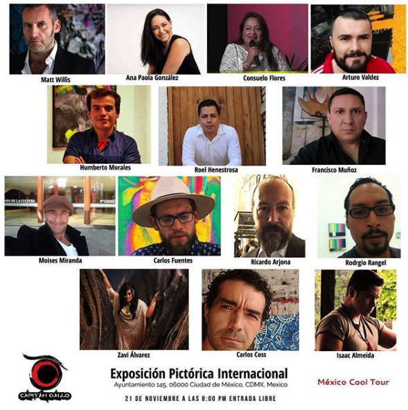

PROYECTOS
Con ya más de 30 exposiciones de manera individual y colectiva en la república en importantes galerías como Guanajuato, Oaxaca,Cdmx, Guadalajara y monterrey, actualmente expone en la galería Adriana Valdés de la ciudad de Guadalajara Jalisco en la muestra denominada ´visual´ durante el mes de junio de 2018, en Xquenda arte y diseño en la ciudad e Celaya Gto y algunas galería de la ciudad de Oaxaca por mencionar algunas Galería Boutique AROCH, Atoko 555. participa en varios colectivos de artistas oaxaqueños que desarrollan la fuerte actividad artística de su estado como el proyecto 30 artistas 30 espacios 30 años y mas conmemorando los 30 años de la cd. De Oaxaca como patrimonio cultural de la humanidad, con el colectivo SAÁ en la conmemoración de la canción mixteca en sus cien años con sede en el museo del ex convento de los dominicos en Yanhuitlán Oaxaca México; miembro cofundador de la galería de arte municipal de su ciudad natal, y la primer galería de arte mixteco en la ciudad de Oaxaca Atoko 555. colabora con el maestro Miguel Alvarado en impartir talleres de su técnica mixocolografia en la república mexicana como Guanajuato, CDMX, Oaxaca, el ultimo taller se impartió en Valparaíso Chile en el taller Casaplan. En el extranjero, en el extranjero en ¨Carlos de la piedra¨ Art Gallery en los Ángeles CA, y en la galería Municipal de Valparaíso Chile. Su obra se ha publicado en magazine de arte mundial en países como Argentina y Perú. Ha sido premiado por Lewinson art en la Cdmx en 3

EXPOSICIONES
- 2009 Exposición colectiva ¨La Imagen Pintada¨ Casa de La Cultura de Asunción Nochixtlán Oaxaca
- 2013 Exposición con Niños en el Museo Regional de Huajuapan (MUREH) donde impartió el Taller ¨LEARTA¨
- 2014 Exposición ¨Pintores Mixtecos¨ Galería Nocheztli, Nochixtlán Oaxaca.
- 2014 Exposición colectiva de arte regional y contemporáneo ¨Corazones de la mixteca¨ Iluminarte espacio creativo, Huajuapan de León.
- 2014 Exposición colectiva de arte oaxaqueño ¨A pintarnos de grana¨ Galería Nocheztli, Nochixtlán, Oaxaca.
- 2014 Exposición ¨Un mundo en otros colores¨ Galería Atoko 555, Oaxaca de Juárez.
- 2015 Exposición colectiva ¨Naturaleza¨ Iluminarte espacio creativo, Huajuapan de León.
- 2015 Exposición individual ¨Dicotomías¨ Galería garabato Huajuapan de León.
- 2015 Exposición ¨Desde el ombligo del universo¨ Galería Atoko 555, Oaxaca de Juárez.
- 2016 Exposición colectiva con el maestro Miguel Alvarado. Galería “Carlos de la piedra” art gallery, L.A, CA. EU.
- 2016 Exposición Colectiva Pintores de la Mixteca Guelaguetza Popular Asunción Nochixtlán Oaxaca.
- 2016 Exposición Colectiva ¨7 En Nochixtlán¨ reminiscencias del 19 de Junio.
- 2016 Exposición Individual ¨Verdes construcciones lumínicas¨ en Casa de La Cultura de Huajuapan de León.
- 2016 Exposición colectiva Galería ¨Sicanda¨ Centro Histórico Oaxaca de Juárez.
- 2016 Exposición Los chivos ¨Festival Mole de caderas¨ Huajuapan de León Oaxaca. ILUMINARTE.
- 2016 Exposición Itinerante Artistas Oaxaqueños CDMX.
- 2017 Exposición en Galería Xquenda Celaya Gto.
- 2017 Exposición de artistas mixtecos en el Centro Cultural Tlaxiaco Oaxaca.
- 2017 Exposición colectivo intercambio con Chile, Cámara Nacional de Comercio (CANACO) Oaxaca.
- 2017 Exposición 12 Pintores Sala Quemada de arte Nochixtlán.
- 2017 Exposición colectiva en el Palacio municipal de Oaxaca de Juárez, ¨La ruta del arte en Oaxaca¨ 30 artistas, 30 años de la cd. De Oaxaca patrimonio cultural de la humanidad.
- 2017 Exposición colectiva galería boutique AROCH, centro histórico Oaxaca de Juaréz Oaxaca.
- 2017 Exposición Hotel Oaxaca Calli “La ruta del arte en Oaxaca” 30 artistas, 30 espacios, 30 años de la cd. De Oaxaca de Juárez como patrimonio cultural de la humanidad.
- 2017 Exposición individual en el instituto politécnico nacional ciidir unidad Oaxaca de Juárez.
- 2017 Exposición colectiva para la conservación de la especie en peligro de extinción “El jaguar”, Centro de convenciones, SUKE consultores colectivo, Oaxaca de Juárez.
- 2017 Elaboración de tapetes monumentales de muertos. Asunción Nochixtlan, Oaxaca.
- 2017 Taller para cien niños de la zona marginada de la región mixteca Oaxaqueña.
- 2018 Exposición “La brújula y la serpiente” galería central de la municipalidad de Valparaíso Chile. (Pintores Mexicanos Oaxaqueños y chilenos intercambio cultural.)
- 2018 Exposición “Cosmos” Planetario Nundehui Oaxaca de Juárez, SUKE consultores colectivo.
- 2018 Exposición “Cosmos” casa de la cultura de Tlacolula de Matamoros Oaxaca. SUKE consultores colectivo.
- 2018 Exposición de rebosos intervenidos en el centro de convenciones de Oaxaca conmemorando el día internacional de la mujer. 47 artistas Oaxaqueños.
- 2018 Exposición 120 Pintores en el 1er encuentro Mixteca Oaxaca, Museo Ex-Convento de los Dominicos en Yanhuitlán Oaxaca México. Con motivo de la celebración de los 100 de la premiación de la canción mixteca de José López Alavés cómo mejor canción Mexicana.
- 2018 Exposición colectiva “visual” en la galería Adriana Valdés, Guadalajara Jalisco.
- 2018 Exposición colectiva 47 artistas interviniendo rebozos elaborados por artesanos de Teotitlán Oaxaca, 107 testimonios de arte empoderando a la mujer “casa del tiempo” UAM CDMX. Quintana Galería.
- 2018 Exposición 107 testimonios en la terminal ADO TAPO CDMX.